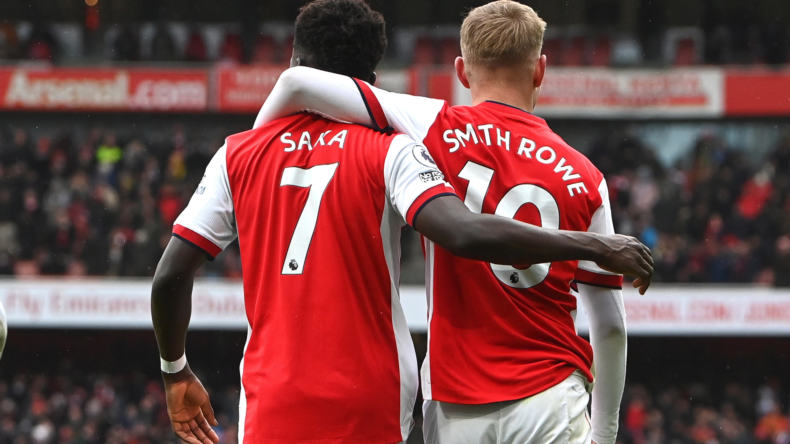
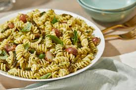

Soccer

One of biggest hobbies is watching soccer. I enjoy waking up early on Saturdays to watch Arsenal FC play in the Premier League. With a young squad and a young manager, watching them improve year on year is quite refreshing. My favorite players in the team are Emile Smith Rowe, Bukayo Saka, and Martin Ødegaard. The creative, attacking, and free-flowing style of football makes the games a joy to watch. One day, I hope to watch a game at Arsenal's home ground: the Emirates Stadium in London. Additionally, I enjoy the football community and meeting fellow fans. Come on you gunners!
Cooking

During my spare time, another interest of mine is to cook. Whether its italian, mexican, or indian, I'm always excited to learn how to cook (and eat) new types of food. One of my favorite dishes to cook, although it may be quite common, is pasta. Its simplicity is one of my favorite parts of pasta. However, I'd like to learn how to cook more types of Indian food. As a college student, this skill is quite useful on a daily basis!